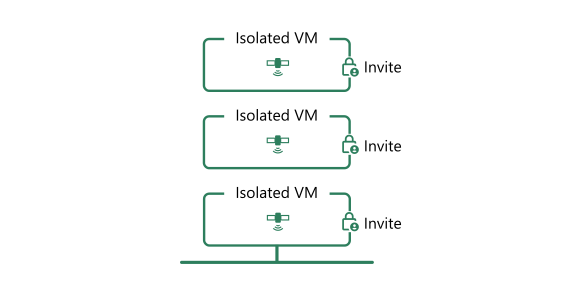

<div class="w-full">
  <div class="px-6 lg:px-10 max-w-7xl m-auto">
    <div class="py-6 px-6 lg:px-10 rounded-xl bg-[#f1fbff] pb-10 mt-6">
      <div>
        <div class="text-2xl lg:text-3xl font-semibold mb-6">
          Single-Tenant for Performance and Security
        </div>

        <div class="flex flex-col-reverse lg:grid grid-cols-10">
          <div class="text-gray-500 text-lg col-span-5 lg:pr-6 pt-8 lg:pt-0">
            Each Earthly Satellite runs in an isolated VM with restricted local
            networking. Nothing is shared between Satellites, and only the users
            you invite can access your Satellite.
            <div class="pt-4">
              So performance isn't negatively impacted by heavy builds run on
              other Satellites, and it's secure from other Satellites users.
            </div>
          </div>

          
        </div>
      </div>
    </div>
  </div>
</div>
